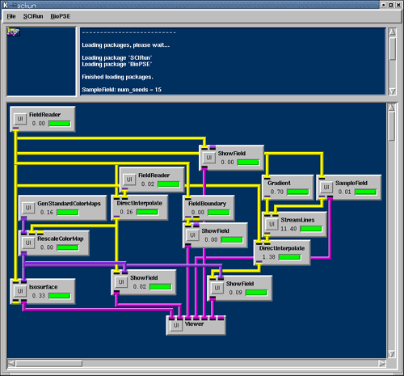
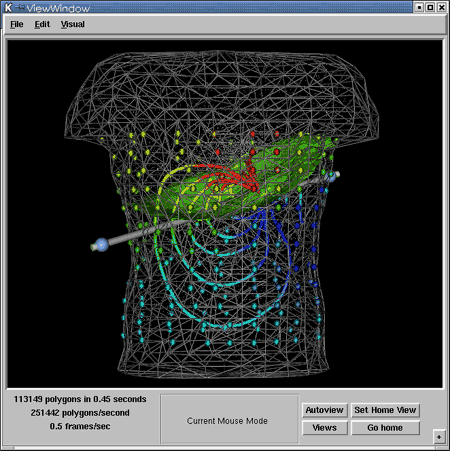
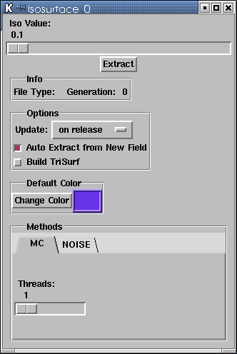

|
Chapter OverviewIn the previous chapter, we constructed three visualization networks to examine the utahtorso-lowres-voltage dataset. In this chapter, we will integrate those small networks into one larger network that performs all of the visualizations concurrently[link 4.0 UG Working with Networks]. We will also add a fourth visualization tool--isosurface extraction.
Now we will perform all of the A, B, C work in a single network. This procedure involves sharing the FieldReader, and Viewer modules across the A, B, and C networks we created in the last chapter. At this point, all of the visualization from the previous
chapter has existed in one network. Now, we will add isosurface
visualization. From the SCIRun/Visualization menu, You will find the complete network in Figure 4.1. As soon as Isosurface executes, you will see this surface appear in the viewer (Figure 4.2). 

The isosurface module [link 4.0 UG Working with Networks]provides
the interface to isosurface creation. The module takes a volume field in,
and outputs a surface field or scene graph data, visualized
with or without a color map. The Iso Value is the first item to set in UI for the Isosurface(Figure 4.3).
This determines where the surface resides throught the volume. To make the module update the visualization, you may: 
Similar to the ShowField Module, you can set a default
color for the Isosurface or, if it has a color map input, the
color map will visualize the data values. You can also choose a
method for extracting the isosurface, and how many threads you
would like the algorithm to use (how many processors to use).
By default, we use a Marching Cubes algorithm, but you can
also use the NOISE algorithm. |